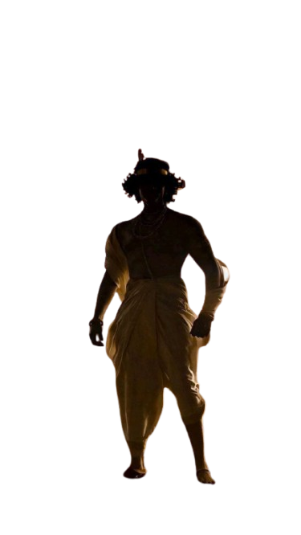

Step into the world of Vedlok, a one-of-a-kind interactive platform that brings the timeless wisdom of Sanatan Dharma to life. Whether you're fascinated by the epic battles of the Ramayana and Mahabharata, seeking the profound teachings of the Bhagavad Gita, or eager to explore the depth of the Vedas and Upanishads, Vedlok offers an immersive journey into our sacred heritage.